【ブロックステート】
はじめに
ここではカスタムブロック内で定義できるブロックステートの使い方をまとめています。
ブロックステートの性質は▶エンティティプロパティに似ていて、オブジェクト指向型言語のプロパティのようなもので、カスタムブロック内で使える内部変数と言っていいでしょう。
ブロックステートの性質は▶エンティティプロパティに似ていて、オブジェクト指向型言語のプロパティのようなもので、カスタムブロック内で使える内部変数と言っていいでしょう。
値の定義
使える値は以下の３種類で、それぞれで扱う値を配列として定義します。
ちなみに、配列で列挙した一番左端の値がデフォルトとなります。
ちなみに、配列で列挙した一番左端の値がデフォルトとなります。
"states": {
"customize:number_data": [ 0, 1, 2 ]
}
"states": {
"customize:string_data": [ "one", "two", "three" ]
}
"states": {
"customize:bool_data": [ true, false ]
}
値の設定
値の設定は
今回は▶ダミーブロックを使用する前提なので
上記の黄色の部分がクライアント（マインクラフト）側でブロックステートを設定する時の書き方です。
但し、サーバー（Websocketサーバー）側から送信する時はブロックステートを設定する時の代入演算子が”=”ではなく”:”になるので注意が必要です。
setblockやfillコマンドで行います。今回は▶ダミーブロックを使用する前提なので
customize:dummy_blockというブロックIDを利用しています。
setblock <X座標> <Y座標> <Z座標> customize:dummy_block ["customize:bool_data"=true]
fill <開始X座標> <開始Y座標> <開始Z座標> <終了X座標> <終了Y座標> <終了Z座標> customize:dummy_block ["customize:bool_data"=true]
上記の黄色の部分がクライアント（マインクラフト）側でブロックステートを設定する時の書き方です。
但し、サーバー（Websocketサーバー）側から送信する時はブロックステートを設定する時の代入演算子が”=”ではなく”:”になるので注意が必要です。
値の参照
値を参照する時は以下のような
permutations定義内で行い、Molangのquery.block_stateを使います。
"permutations": [
{
"condition": "query.block_state('customize:bool_data') == true",
"components": {
"minecraft:collision_box": true
}
},
{
"condition": "query.block_state('customize:bool_data') == false",
"components": {
"minecraft:collision_box": false
}
}
]
- ・permutations
-
以下の定義ブロックを配列で設定します。
- condition
- ブロックステートの値を参照して条件式を設定します。
- components
-
conditionの条件に一致した時に適用するcomponentsを設定します。
今回の場合は以下の動作になります。- ブロックステートがtrueの時
-
minecraft:collision_boxをtrueにしてブロックとの衝突判定を有りにしています。 - ブロックステートがfalseの時
-
minecraft:collision_boxをfalseにしてブロックとの衝突判定を無しにしています。
componentsの詳細については▶ダミーブロック（コンポーネント定義）の項をご覧ください。
テストしてみる
今回のケースでブロック定義を作成すると以下のような内容になります。
コマンドで設置する場合、以下のように”[”まで入力すると入力補助が働いてブロック内で定義しているブロックステートの名前が表示されるので便利です。
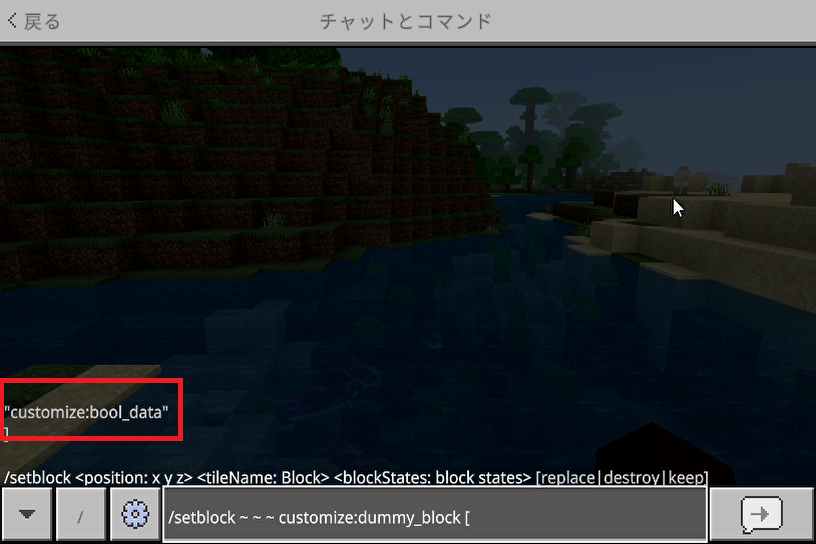
さらに”=”まで入力すると、該当のブロックステートに設定できる値が以下のようにリスト表示されます。
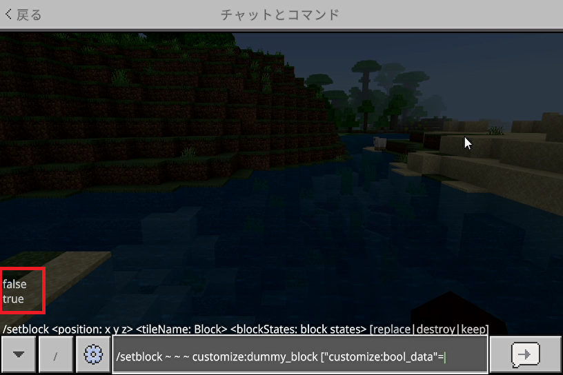
▼ブロック設置後
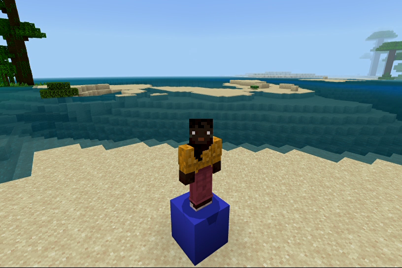
衝突判定有りなのでブロックの上に乗る事ができます。
▼ブロック設置後
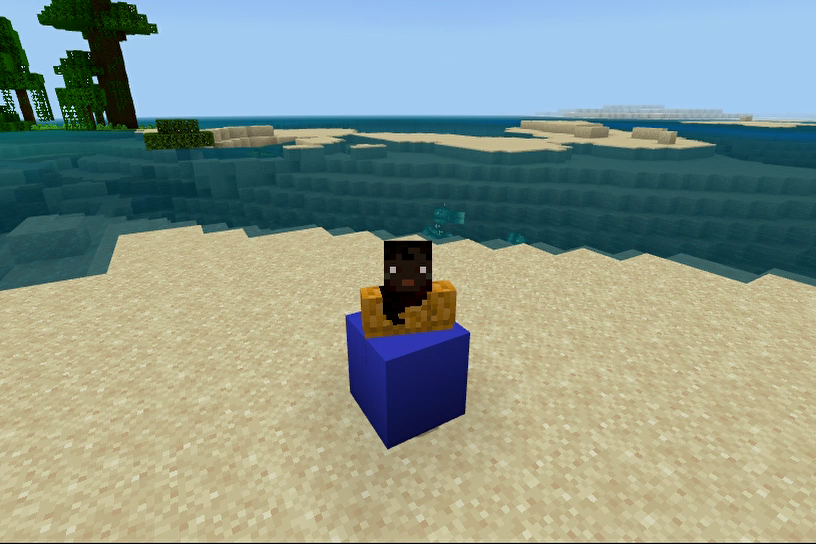
衝突判定無しなのでブロックの上に乗ろうとしてもすり抜けます。
{
"format_version": "1.20.80",
"minecraft:block": {
"description": {
"identifier": "customize:dummy_block",
"states": {
"customize:bool_data": [ true, false ]
}
},
"permutations": [
{
"condition": "query.block_state('customize:bool_data') == true",
"components": {
"minecraft:collision_box": true
}
},
{
"condition": "query.block_state('customize:bool_data') == false",
"components": {
"minecraft:collision_box": false
}
}
],
"components": {
}
}
}
states定義はdescription定義ブロック内に記述します。permutations定義ブロックはdescriptionやcomponents定義ブロックと同じ階層に並べて記述します。コマンドで設置する場合、以下のように”[”まで入力すると入力補助が働いてブロック内で定義しているブロックステートの名前が表示されるので便利です。
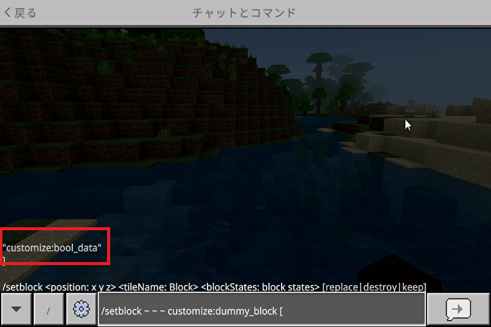
さらに”=”まで入力すると、該当のブロックステートに設定できる値が以下のようにリスト表示されます。
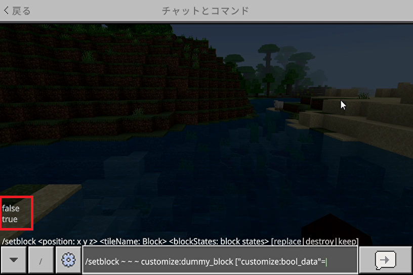
ブロックステートをtrueにして設置
setblock <X座標> <Y座標> <Z座標> customize:dummy_block ["customize:bool_data"=true]
▼ブロック設置後
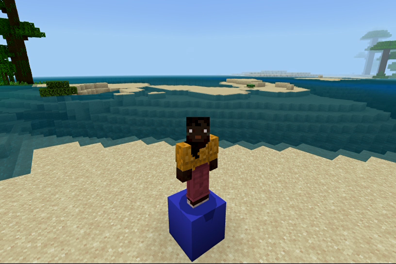
衝突判定有りなのでブロックの上に乗る事ができます。
ブロックステートをfalseにして設置
setblock <X座標> <Y座標> <Z座標> customize:dummy_block ["customize:bool_data"=false]
▼ブロック設置後
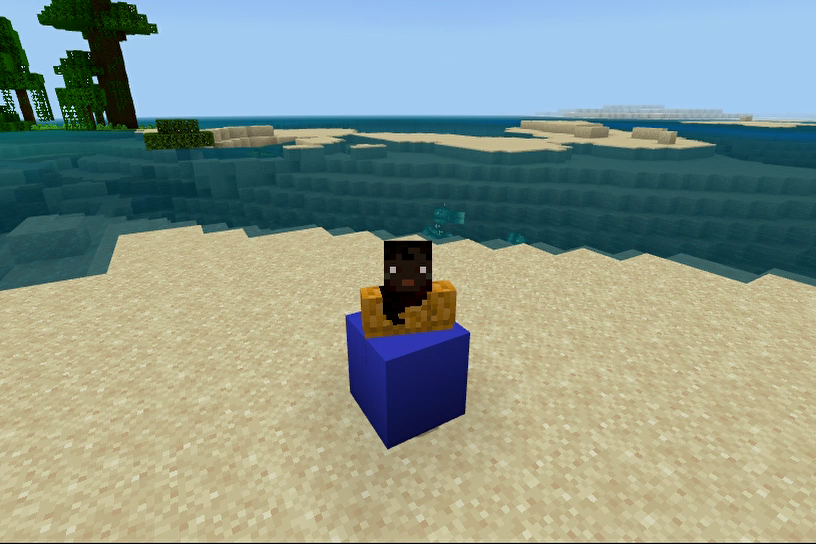
衝突判定無しなのでブロックの上に乗ろうとしてもすり抜けます。
おわりに
今回の
「光の剣」で使えるブロックは以下の３つのモードに分けて実装しています。
states定義は▶光の剣で利用しているブロックでも使っています。「光の剣」で使えるブロックは以下の３つのモードに分けて実装しています。
- ・シールドモードとして設置した時
-
バリアブロックと同じ性質にする事によってサバイバルモードでは破壊できないようにしています。
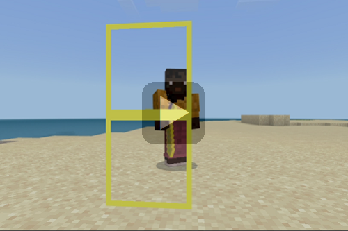
- ・ブロックモードとして設置した時
-
松明代わりに光源ブロック（光源レベルは１５）として使えるので、ブロックを通り抜けできると同時に素手で簡単に壊せるようにしています。
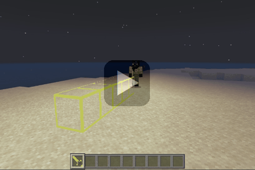
- ・建築モードとして設置した時
-
ガラスブロックと同じ性質にする事で、簡単には壊せますが通り抜けはできないようにしています。
また、光源ブロックとしても機能するので松明を使わなくても窓の設置だけで明るく照らす事ができます。
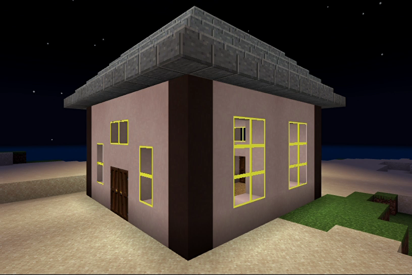